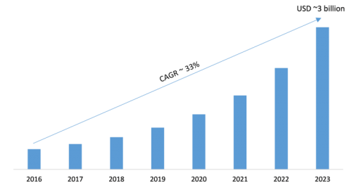

Before we begin with deciphering the future of 2D animation industry let us first understand what animation is. The animation is the creative technology behind moving images that we see in advertisements and movies. It's a perfect amalgamation of creative talent and technology wherein images are infused with motion. If we delve into the history of animation we will be surprised to notice that a concept which is still unique in our minds has a deep historical existence.
The art of creating an illusion of motion goes long back in time. The Phenakistoscope was the first real animation device. In the year 1832, Joseph Plateau discovered this device. It was the very first device that could create a fluid type illusion of animation. The current form of animation is backed up by various stages which comprise the history of the evolution of animation in terms of technology – from stop motion, motion graphic and the now prevalent Computer Generated Imagery. In fact, the history of feature animated film in India goes back in 1934 with the release of India's very first animated movie named Jambu Kaka followed by another animated movie with a soundtrack named On a Moonlit Night, released in 1934.
The imaginative power is the key here Irrespective of the medium - 2D or 3D. Thus, one can never underestimate the power of 2D animation and the growth of this industry.
The art of animation is as old as the art of traditional storytelling and still continues to captivate people of all ages and all kinds of businesses. If you do a quick rewind to your childhood you will get glimpses of cat and mouse cartoons, the cute bunny and his carrot, the adorable mermaid with her clan, the friendly ghost and much more - all these characters and movies are the brainchild of the animation industry. Animation made our childhood so much interesting. Same is the case of businesses across a large spectrum. Businesses use animated characters, animated advertisements, and movies to sell their products or services to their potential customers. People tend to get amused by these movies starring such cute friendly characters (remember ZooZoo from the Vodafone commercial), they tend to associate the brand with these characters leaving a much longer impact on their mind. The animation industry has played a key role in the growth of the entertainment industry as well as commercial business sectors.
In a traditional 2D animation technique images are drawn on paper by trained artists, then each movement of the animated character is drawn on celluloid sheets which are then painted or colored. A fusion of all these images eventually forms one particular movement for further assimilation into one single frame which is generally a 24 frame shot giving us an animation of one second as the end result.

It requires a great amount of precision, artistic bent of time combined with technology. 2D animators are entrusted upon with the task of developing characters, instilling movement into them and creating motion videos through various animation software available in the market.
Although the world has moved towards voluminous 3D movies we cannot ignore the massive turning point that 2D animation created for the entertainment industry. Some of the most memorable children-oriented movies like The Shrek, Princess and the Frog, Beauty and the Beast, Tarzan, The Jungle Book along with Indian cartoons like Chota Bheem, Motu Paltu, etc.
With so much to its credit, the future of 2D animation still has a firm standing in the animation industry. Even in the wake of 3D visuals which might be eye-catching the subtleness of 2D animated characters and movies have a long time effect on the viewers. According to big names in the industry, the animation is all about conveying a message to the audience by the means of a story with visuals and adorable animated characters. The success lies in how creatively and intelligently an artist or a developer conveys his message across so that it catches the interest of the viewers and leaves a long term impact.
The future of 2D animation isn't drying at all. In fact, it is evolving with each day. There are a number of reasons why the topic 'Future of 2D industry' needs to be written about. Firstly we are in a state of delusional created by the pioneers in the animation world - Walt Disney or Dreamworks. Since they have considerably moved towards 3D movies it has made many of us wonder over what the future of 2D animation holds. The major reason is that 3D animation is less time consuming and faster to make. It's completely common sense to understand that drawing pieces of characters by hand one by one by adding little changes with each drawing is obviously more time consuming than computer-generated 3D graphics. Another major misconception which surrounds the word of 2D animation is that it is only for the children. These are temporary viewpoints that people have apparently made regarding 2D animation. What still holds value is that 2D cartoons, movies, stories, advertisements, and motion pictures still have a huge amount of audience across all ages and all mediums - television and theatres.
What needs to be reckoned is that 2D animation is the heart & soul of all types of animation. 2D shaped the animation industry, and without it, modern computer-generated animation simply would not exist at all. 2D animation is the first and foremost technique which invented the animation industry and gave it the identity that it enjoys in today's world.
There is a huge number of 2D animation films being made and it won't be any much of effort to curate a list of such films. You will get dozen of them at the click of a button on the internet. Apart from this if a general public view is taken into consideration one will understand that 2D movies are still on their favorite due to its less complexity and an inherent simplicity in terms of technology and screen presence which catches the eye and hearts of people of all ages. 3D animation can be overbearing at times and there is no way one can deny this fact.
2D animation continues to thrive in the world of advertisement and media. It is not going anywhere as it's hard to get away with it. The 2D animation industry has also given us loads of memorable advertisements too like the famous Chintamani from ICICI Bank commercial and many more. There are a huge number of companies who have entered the world of animation to use it as a medium to sell their product or service. It can be argued that television advertisement is a thing for huge market players owing to the amount of money involved. This is where the portable feature of 2D animation comes to picture. Small and medium enterprises are also making use of 2D animated animation techniques to make promotional videos for their business - both in terms of selling their product/service and telling their customers about the story of their continual growth.
According to articles by credible online source DigitalMag - a 2D computer-generated interface holds a deep-rooted standing in the industry and is here to stay for a much longer time. According to industry experts, 2D animation allows more space for experimentation and personal style which makes it quite a favorite medium for animation among the experts.
The future of 2D animation is moving towards more technically and creatively inclined technology. Brands and content producers are now creating animated videos using the latest technologies such as augmented reality, virtual reality, and 360-degree video technology. These technologies are highly advanced and help to create content which keeps the users involved and immersed in the story.
With a heap of memorable work in its basket and immense potential one can envision a great future in the 2D animation industry. It's viable in terms of a career option and of course for businesses seeking a potential amount of growth in terms of customers and sales. With the growing demand for well-trained people, many animation studios and companies have come up in cities across the country.
Going by the facts stated by industry experts - "India’s animation entertainment sector has experienced a major boom in the recent past, employing over 80,000 people, and the current size is estimated at US$ 247 million and expected to grow at 15-20% per annum. According to the latest report by NASSCOM, the animation industry in India will grow at 22 percent every year."
We can summarise by saying that the 2D animation industry has a huge potential for growth and an immense presence which yet to be explored. It is the pioneering technique and will always have a superior hand over other upcoming technologies which may declare out themselves advanced and better in nature.